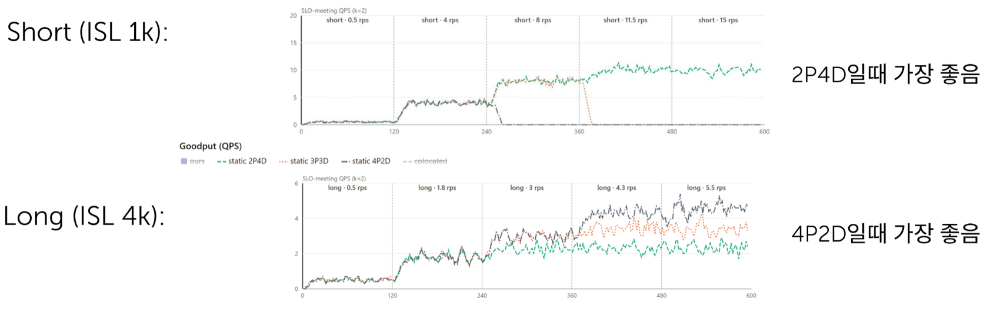
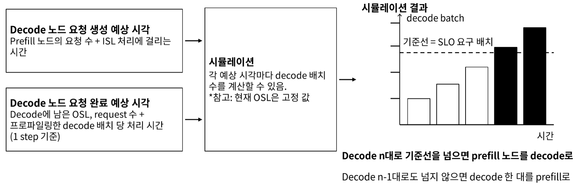
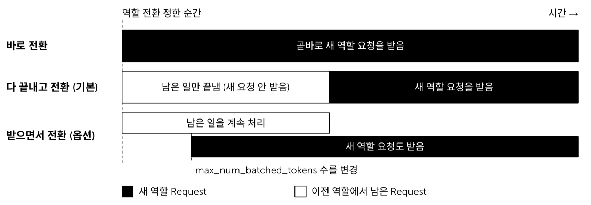
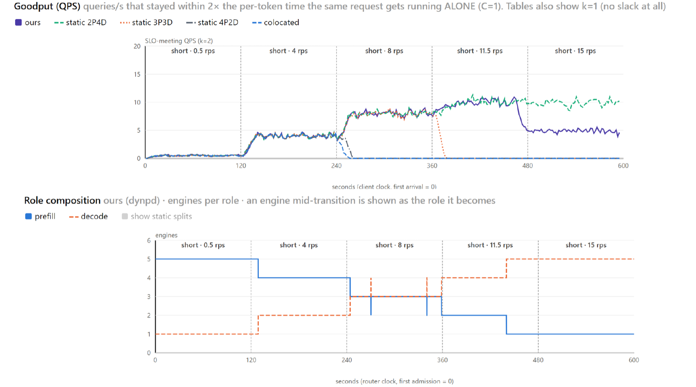
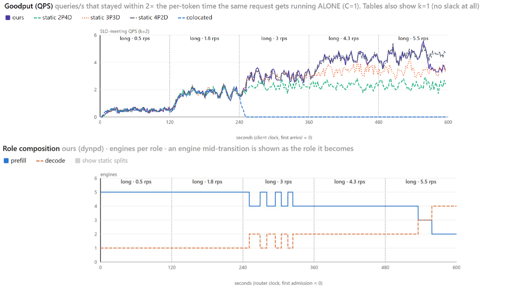
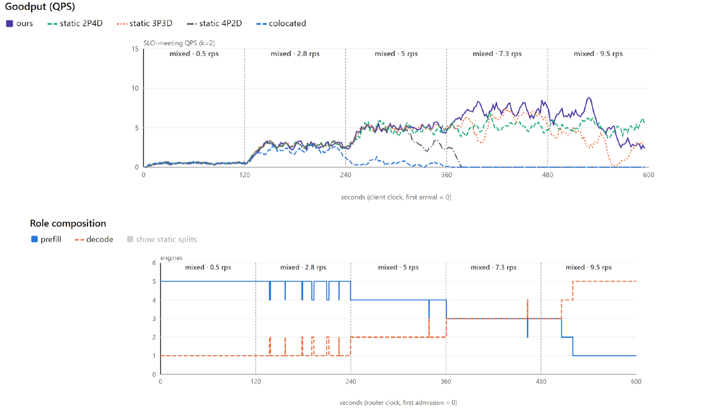

How many engines should be prefill and how many decode? The answer moves with the traffic. This note covers a scheduler that simulates the decode queue every 100 ms and switches an engine's role when the per-token SLO is at risk, measured on a 3-node MI250 cluster. 엔진을 prefill 과 decode 에 몇 대씩 줄지는 트래픽에 따라 달라진다. 이 노트는 100 ms 마다 decode 큐를 시뮬레이션해 토큰당 SLO 가 위태로우면 엔진의 역할을 바꾸는 스케줄러를, 3노드 MI250 클러스터 실측과 함께 정리한다.
Running compute-heavy prefill and memory-bound decode on separate engines, so a long prompt does not stall token streams.연산 위주인 prefill 과 메모리 위주인 decode 를 서로 다른 엔진에서 돌린다. 긴 프롬프트가 토큰 스트림을 막지 않게 된다.
Time To First Token (prefill's score) and Time Per Output Token (decode's score). They trade off: an engine given to prefill improves TTFT and worsens TPOT.Time To First Token 은 prefill 의 성적, Time Per Output Token 은 decode 의 성적이다. 둘은 맞바꾸는 관계여서 엔진을 prefill 에 주면 TTFT 는 좋아지고 TPOT 는 나빠진다.
Requests served within the SLO. A slow finish counts as zero, so goodput can fall while raw throughput rises.SLO 안에 처리한 요청 수다. 늦게 끝난 요청은 0점이라 raw throughput 이 올라도 goodput 은 떨어질 수 있다.
2× the TPOT the same request gets running alone (concurrency = 1). A self-relative bar, not an absolute millisecond number.같은 요청이 혼자 돌 때(concurrency = 1) TPOT 의 2배다. 절대 밀리초가 아니라 요청 자신을 기준으로 삼는다.
Requests one decode engine steps at once. Bigger batch means slower tokens, so "meet the TPOT SLO" becomes "keep the batch below this number".decode 엔진 하나가 동시에 돌리는 요청 수다. 배치가 크면 토큰이 느려지므로 "TPOT SLO 를 지켜라"는 "배치를 이 수 아래로 유지하라"와 같다.
Input and output sequence length. ISL sets prefill cost; OSL sets how long a request holds a decode slot.입력·출력 시퀀스 길이다. ISL 은 prefill 비용을, OSL 은 요청이 decode 슬롯을 붙잡는 시간을 정한다.
Six engines can be 2P4D, 3P3D, 4P2D, and so on. The deck's claim is that this choice is not free: a wrong split wastes hardware, and inference traffic is hard to predict. 엔진 6대는 2P4D, 3P3D, 4P2D 등으로 나눌 수 있다. 발표자료는 이 선택이 공짜가 아니라고 본다. 잘못 나누면 하드웨어를 버리게 되는데, 추론 트래픽은 예측하기 어렵다.

Goodput (SLO-meeting QPS, k=2) over a 10-minute stepped-load run. Top: ISL 1k, 2P4D wins. Bottom: ISL 4k, 4P2D wins. Original deck, p.2.부하를 단계적으로 올린 10분 실행의 goodput(SLO 를 지킨 QPS, k=2). 위: ISL 1k 에서 2P4D 승. 아래: ISL 4k 에서 4P2D 승. 원 자료 p.2.
Same cluster, same engines, opposite best answers. Short prompts are cheap to prefill, so the pressure lands on decode and you want four decode engines. Long prompts make prefill the bottleneck, so you want four prefill engines. A static split fits only one of these, and real traffic mixes both. 같은 클러스터, 같은 엔진인데 정답이 정반대다. 짧은 프롬프트는 prefill 이 싸서 압력이 decode 로 몰리니 decode 를 4대 두는 게 낫다. 긴 프롬프트는 prefill 이 병목이 되니 prefill 을 4대 두는 게 낫다. 정적 설정은 한쪽에만 맞는데, 실제 트래픽은 둘이 섞여 계속 변한다.
The only thing the scheduler tries to satisfy is the decode SLO. Not TTFT, not throughput, not a weighted blend. Two reasons are given: 스케줄러가 지키려는 목표는 decode SLO 하나뿐이다. TTFT 도, throughput 도, 가중합도 아니다. 이유는 두 가지다.
The core is small. Instead of forecasting arrivals with a time-series model, the scheduler takes work it can already see and plays it forward. 핵심은 작다. 시계열 모델로 도착을 예측하지 않고, 이미 보이는 일을 앞으로 굴려 본다.

The switching decision: two estimates, a simulation, predicted decode batch vs the SLO baseline. Original deck, p.6.전환 판단: 두 추정, 시뮬레이션, 예상 decode 배치와 SLO 기준선. 원 자료 p.6.
| Estimate추정 대상 | What it is computed from무엇으로 계산하나 |
|---|---|
| When new work will arrive at decodedecode 노드에 요청이 생길 예상 시각 | Requests on the prefill engines and each one's ISL prefill time. A request finishing prefill at time t joins decode at t.prefill 엔진에 올라 있는 요청과 각 요청의 ISL 처리 시간. 시각 t 에 prefill 을 마친 요청은 그때 decode 슬롯을 차지한다. |
| When current work will leave decodedecode 노드의 요청이 끝날 예상 시각 | Remaining OSL and request count, times the profiled per-step decode time. A request with 100 tokens left leaves 100 steps from now.남은 OSL 과 요청 수에 프로파일링한 decode 1 step 시간을 곱한다. 100 토큰 남은 요청은 100 step 뒤에 빠진다. |
With both on one timeline you get the decode batch at every future instant. Draw the SLO-required batch as a baseline, and the decision becomes: does the predicted batch cross the line? 둘을 한 타임라인에 올리면 미래의 매 순간 decode 배치를 계산할 수 있다. SLO 가 요구하는 배치를 기준선으로 그으면, 판단은 예상 배치가 선을 넘느냐로 단순해진다.
If the batch crosses the baseline even with all n decode engines, convert a prefill engine to decode.decode n 대 전부로도 기준선을 넘으면 prefill 엔진 하나를 decode 로 바꾼다.
If it would not cross even with n−1, convert one decode engine to prefill to help TTFT.n−1 대로도 넘지 않으면 decode 엔진 하나를 prefill 로 바꿔 TTFT 를 돕는다.
Four operational rules sit around that core:여기에 운영 규칙 네 가지가 붙는다.
An engine being moved still has requests on it. What happens to them sets the transition cost. 옮길 엔진에도 요청이 올라가 있다. 그 요청을 어떻게 처리하느냐가 전환 비용을 정한다.

Three transition modes. Black = new-role requests, white = old-role leftovers. Original deck, p.7.세 가지 전환 방식. 검정은 새 역할 요청, 흰색은 이전 역할의 남은 요청. 원 자료 p.7.
| Mode방식 | What happens to in-flight work진행 중인 일은 어떻게 되나 | Trade-off대가 |
|---|---|---|
| Switch immediately바로 전환 | Starts taking new-role requests at once.곧바로 새 역할 요청을 받는다. | Zero delay, but only safe with nothing left to finish.지연은 0 이지만 남은 일이 없을 때만 안전하다. |
| Drain, then switch다 끝내고 전환 (default기본) | Stops accepting work, finishes what it has, then flips role.새 요청을 받지 않고 남은 일을 끝낸 뒤 역할을 바꾼다. | Clean, but the engine is idle-ish for the whole drain, which the slowest request sets.깔끔하지만 비우는 동안 엔진이 거의 논다. 그 시간은 가장 느린 요청이 정한다. |
| Overlap받으면서 전환 (experimental옵션) | Processes leftovers while already accepting new-role requests, sharing the engine via max_num_batched_tokens.남은 일을 처리하면서 동시에 새 역할 요청도 받는다. max_num_batched_tokens 로 엔진을 나눠 쓴다. |
Removes the drain cost but slows decode, so it is still under test.비우는 비용은 없애지만 decode 가 느려져서 아직 실험 중이다. |
The default is drain-then-switch, with a shortcut: if nothing is left to finish, move immediately. The overlap mode was built, measured, found to cost more than it saved, and left off. 기본값은 "다 끝내고 전환"이고, 남은 일이 없으면 바로 옮긴다. 겹치기 방식은 만들어서 재 보니 아낀 것보다 비용이 커서 꺼 두었다.
| Item항목 | Value값 |
|---|---|
| Model / engine모델 / 엔진 | google/gemma-4-31B-it · vLLM 0.25.1 (ROCm) |
| Hardware하드웨어 | MI250 (gfx90a), 3 nodes × 8 GCD = 24 GCD, TP-4: 6 engines, hence the static baselines 2P4D / 3P3D / 4P2D.MI250 (gfx90a), 3노드 × 8 GCD = 24 GCD, TP-4. 엔진 6대라서 정적 기준선이 2P4D / 3P3D / 4P2D 다. |
| SLOSLO | TPOT within 2× the concurrency-1 value (k = 2)TPOT 이 concurrency=1 일 때 값의 2배 이내 (k = 2) |
| Other기타 | Deliberately run with no KV cache hits일부러 KV 캐시 히트가 나지 않는 환경 |
| Scenarios시나리오 | Short ISL 1k · Long ISL 4k · Mixed 1k:4k = 7:3, all ±30%, OSL 256 ±30%. Load steps up every 120 s over a 600 s run.Short ISL 1k · Long ISL 4k · Mixed 1k:4k = 7:3, 모두 ±30%, OSL 256 ±30%. 600초 동안 120초마다 부하를 한 단계씩 올린다. |
QPS is measured throughput; RPS is the client's offered rate. Each figure shows goodput on top and the scheduler's role composition below; an engine mid-transition is drawn as its new role.QPS 는 측정한 throughput, RPS 는 클라이언트가 보낸 요청률이다. 그림마다 위는 goodput, 아래는 스케줄러의 역할 구성이고, 전환 중인 엔진은 새 역할로 그린다.

Short workload; bottom panel is ours. Original deck, p.3.Short 워크로드. 아래 패널이 ours. 원 자료 p.3.
The scheduler starts at 5P1D and, as load rises, walks down through 4P2D, 3P3D, 2P4D and 1P5D. Up to saturation it sits right on the best static line, inferred from the decode queue alone. 스케줄러는 5P1D 에서 시작해 부하가 오를 때마다 4P2D, 3P3D, 2P4D, 1P5D 로 내려간다. 포화 전까지는 최적 정적 곡선과 겹친다. decode 큐만 보고 알아낸 결과다.
At 15 rps ours falls to roughly 5 while static 2P4D holds around 10. §6 lists this saturation behaviour as a known problem.
15 rps 에서는 ours 가 5 언저리로 떨어지고 정적 2P4D 는 10 근처를 유지한다. §6 이 알려진 문제로 적은 포화 시 동작이다.

Long workload; ours converges near 4P2D. Original deck, p.4.Long 워크로드. ours 가 4P2D 근처로 수렴. 원 자료 p.4.
With identical algorithm and parameters, it settles on the mirror image: prefill-heavy, tracking static 4P2D. Around 240–350 s the role line flickers between 4 and 5 prefill as the loop hunts near a boundary, the same "role switching happens too often" problem §6 flags. 알고리즘과 파라미터가 같은데 거울상 구성에 안착한다. prefill 쪽이 무겁고 정적 4P2D 를 따라간다. 240–350초 부근에서는 역할 선이 prefill 4와 5 사이를 오간다. 경계 근처에서 루프가 헤매는 것으로, §6 의 "역할 전환이 자주 발생"과 같은 현상이다.

Mixed workload; ours converges to 3P3D. Original deck, p.5.Mixed 워크로드. ours 는 3P3D 로 수렴. 원 자료 p.5.
The deck gives a full slide to what the design does not do. It is reproduced in full. 발표자료는 이 설계가 못 하는 것에 슬라이드 한 장을 쓴다. 그대로 옮긴다.
| Limitation한계 | Why it bites왜 문제가 되나 | Author's stated next step저자가 적은 다음 단계 |
|---|---|---|
| KV cache is not consideredKV 캐시를 고려하지 않음 | When an engine changes role, its KV has to go somewhere. That is not modelled yet.역할을 바꾼 엔진의 KV 는 어딘가로 옮겨야 하는데, 아직 모델링되어 있지 않다. | Remote KV cacheRemote KV cache |
| Role switching happens too often역할 전환이 자주 발생 | Inaccurate simulation or mid-transition arrivals cancel the move, and the cancel leaves the engine underutilised.시뮬레이션이 부정확하거나 전환 중 요청이 더 들어오면 이동이 취소되고, 그 노드는 덜 쓰이게 된다. | Raise simulation accuracy, e.g. live profiling시뮬레이션 정확도 향상(실시간 프로파일링 등) |
| The true OSL is unknown정확한 OSL 값을 모름 | The departure estimate assumes a known OSL. A model stops when it stops.이탈 추정은 OSL 을 안다고 가정하지만 실제로는 알 수 없다. | An OSL predictor is neededOSL 예측기가 필요 |
| Transition cost eats throughput전환 비용으로 인한 throughput 손실 | A decode→prefill switch waits on the single longest request, so one OSL outlier idles the engine for the whole tail.decode→prefill 전환은 가장 긴 요청을 기다리므로, OSL outlier 하나가 그 꼬리 내내 엔진을 놀게 한다. | Request live migration off the decode enginedecode 노드에서 request live migration |
| Throughput is not the objective, so it drops at saturationthroughput 이 최적화 대상이 아니라서 포화 시 떨어짐 | Saturated, the rule converges on "send everything to decode", the wrong move for total throughput. This is the 15 rps gap in the Short chart.포화되면 규칙이 "무조건 decode 로"로 수렴하는데, 총 throughput 에는 틀린 선택이다. Short 그림의 15 rps 격차가 이것이다. | Change the formula at saturation: admission control, or maximise throughput by matching prefill production rate = decode consumption rate포화 시 수식 변경: admission control, 또는 prefill 생산 속도 = decode 소비 속도로 맞춰 throughput 최대화 |
Three systems tackle the same problem. Two of them predict; this one does not. 같은 문제를 푸는 시스템이 셋 있다. 둘은 예측을 하고, 이 설계는 하지 않는다.
| System시스템 | How it decides무엇으로 정하나 | Cadence주기 | Notes특징 |
|---|---|---|---|
| This design이 설계 | Simulation of work already in the system이미 시스템 안에 있는 일의 시뮬레이션 | 0.1 s | No forecasting model. Single objective: decode SLO. Minimum one engine per role.예측 모델 없음. 목적함수는 decode SLO 하나. 역할당 최소 1대. |
| DOPD | ARIMA forecast of request count and lengths (ISL, OSL)요청 수와 길이(ISL, OSL)의 ARIMA 예측 | — | Equalises prefill production and decode consumption. Very short requests, where KV transfer would cost more than prefill, run directly on decode. Forecast error and burstiness hurt it, so a fallback derives the P/D node count from wait-queue length.prefill 생산량과 decode 소비량을 같게 맞춘다. KV 전송이 prefill 보다 오래 걸릴 만큼 짧은 요청은 decode 노드가 직접 처리한다. 예측 오차와 burstiness 에 약해서, wait queue 길이로 필요 P/D 노드 수를 정하는 fallback 이 있다. |
| xLLM (JD.com · OpenAtom) | Monitoring + per-request ISL inspection모니터링 + 요청별 ISL 확인 | — | Closest in spirit: it also prioritises the TPOT SLO. D→P when a request's ISL means prefill cannot meet TTFT; P→D on resource shortage or an observed TPOT miss, only when prefill is idle. Allows P/D aggregation during a transition, gives decode batches priority, keeps a minimum of two engines.가장 비슷하다. 여기도 TPOT SLO 를 우선한다. ISL 로 보아 prefill 노드가 TTFT 를 못 맞추면 D→P 로 바꾼다. P→D 는 자원이 부족하거나 TPOT SLO 위반이 관측되고 prefill 노드에 일이 없을 때 한다. 전환 중 P/D aggregation 을 허용하고, decode 배치에 할당 우선권을 주며, 최소 2대를 유지한다. |
| NVIDIA Dynamo | ARIMA forecast in a throughput-based loop (sla target)throughput 기반 루프의 ARIMA 예측 (sla 목표) |
3 min3분 | Forecasts request count and mean ISL/OSL, uses recent KV-cache hit and speculative accept length, then computes per-worker throughput that meets TTFT/TPOT. Conditional disaggregation lets a decode worker run prefill itself when fewer than 2048 tokens need computing and under 70% of the prompt must be recomputed.요청 수와 평균 ISL/OSL 은 예측하고, KV 캐시 히트와 speculative accept length 는 최근 값을 써서 TTFT/TPOT 를 만족하는 worker 당 처리량을 계산한다. Conditional disaggregation 도 있다. 새로 계산할 토큰이 2048 개 미만이고 동시에 재계산 비율이 프롬프트의 70% 미만이면 decode worker 가 prefill 을 직접 돌린다. |